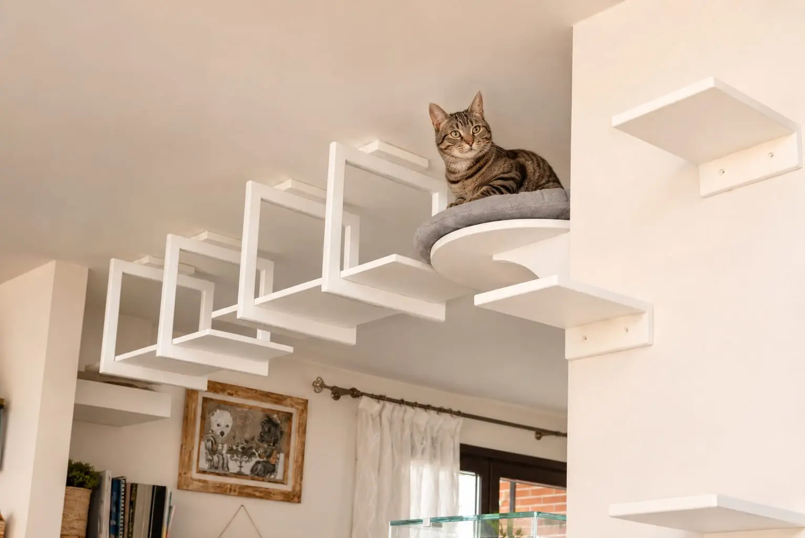
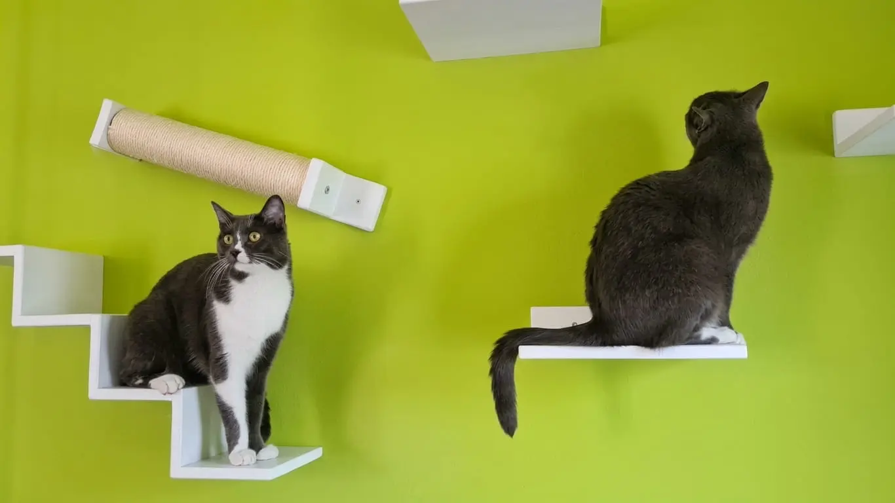
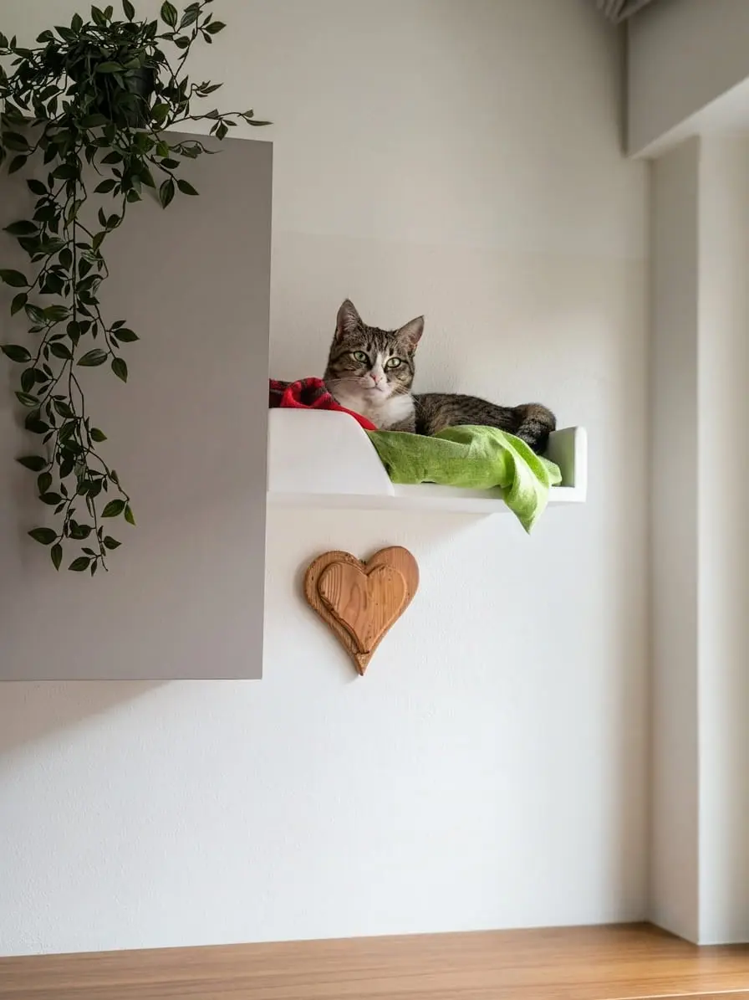

Una casa a misura di gatto: non servono grandi spazi, ma buone possibilità
Scopri come rendere la casa più interessante per il tuo gatto attraverso percorsi, punti di osservazione e spazi dedicati.
Leggi articoloConsigli, idee e approfondimenti per creare ambienti più ricchi e stimolanti per il tuo gatto.

Scopri come rendere la casa più interessante per il tuo gatto attraverso percorsi, punti di osservazione e spazi dedicati.
Leggi articolo
Scopri come capire i segnali della noia e come arricchire la vita del tuo gatto in casa.
Leggi articolo
Scopri perché i gatti amano vivere anche lo spazio in altezza e come creare percorsi verticali sicuri e stimolanti dentro casa.
Leggi articolo
Scopri perché alcuni gatti ignorano il tiragraffi e come trovare una soluzione più adatta alle loro abitudini.
Leggi articoloRaccontaci lo spazio che hai a disposizione e cosa vorresti creare insieme.
Contattaci